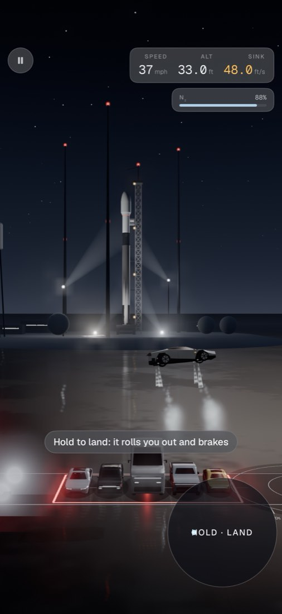
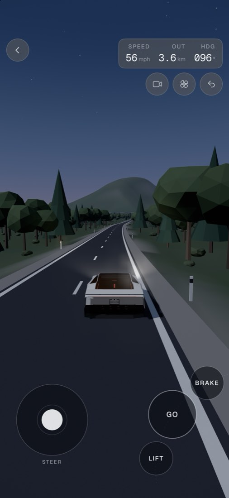
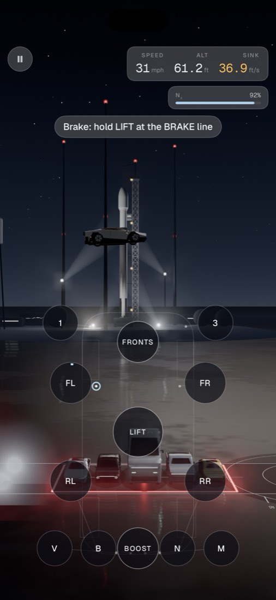
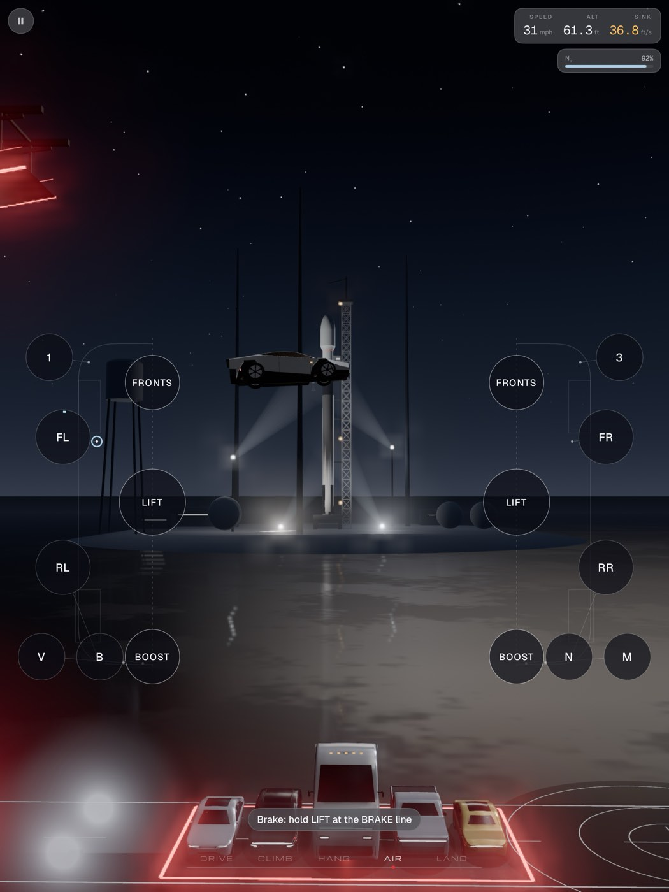

Public beta · iPhone, iPhone Duo, iPad
COLD GAS,
native.
The jump you know from the browser, rebuilt for the phone in your hand and the one that folds. Drawn in Metal at up to 120 Hz, landings you feel through the haptics, and judges that write their verdict on your device.
iOS 18 or later.
On a computer?Point your iPhone's camera here to join.
Fold it mid-run.
It keeps flying.
The Duo is the screen the native game was built for first. It lays itself out from the fold, never the hinge angle, so closing it, opening it or standing it up reshapes the screen without pausing the run. A light haptic tick marks each detent, and the stage light warms as you open it.
-
Closed
A phone in one hand.
The outer screen gets the phone's layout: Assist's one-thumb pad, or Pro's stick and buttons low in the corners.
-
Open
Edge to edge, across the crease.
Open it flat and the scene runs across the whole inner display, full screen. The HUD and the controls float over it, inside the safe area.
-
Tabletop
A handheld console.
Stand it half open: the scene on the top screen, the controller on the bottom. Two wells, one per thumb, either side of the DRIVE · CLIMB · HANG · AIR · LAND strip.
-
Book
Held like a book.
Still edge to edge. The controls climb the side edges, bigger than on a phone and clear of the crease; on Advanced the valves split down the spine, the car's left valves under your left thumb.
Shaped for the phone
in your hand.
One thumb on Assist, a stick and buttons on Pro, all ten valves on Advanced. The same deterministic physics as the web, tick for tick.

One thumb flies it.
Hold to land: it rolls you out and brakes.

A road that keeps going.
Leave the Show's apron and drive on, through a world built as you go. Nothing is scored.

All ten valves.
The valve deck is the car, whole, under your thumbs on an upright phone.
- Assist
One thumb flies it.
Hold to land: it rolls you out and brakes.
- Free Drive
A road that keeps going.
Leave the Show's apron and drive on, through a world built as you go. Nothing is scored.
- Advanced
All ten valves.
The valve deck is the car, whole, under your thumbs on an upright phone.
Room for
both hands.
Full screen, any way up. On iPad the controls sit at the side grips, at mid height, with the scene between your hands.
- PencilApple Pencil pressure scales a valve, as the web's pen does.
- Every way upPortrait or landscape, the deck re-forms for the shape.
- Same runThe same course, the same scorer, the same physics as the phone.

Judged on
your device.
On an iPhone or iPad with Apple Intelligence, the three judges write their words with Apple's on-device model: no network, no key, $0, and nothing about the run sent anywhere. The scores stay the game's own, from the fixed scorer; the model only writes the words.
Every wheel,
in your hand.
Drawn in Metal.Up to 120 frames a second on a ProMotion screen.
A synced landing.One clean thump through the haptics, each wheel at the tick it touched. A sloppy one is felt as four.
The physics.The web's deterministic sim, stepped 240 times a second, tick for tick.
Three taps
to the stand.
- Get TestFlight, Apple's free beta app, from the App Store.
- Open the invite on your iPhone or iPad and tap Accept.
- Install and fly. Send feedback from TestFlight: take a screenshot in the game and tap Share Beta Feedback.
Ten thrusters. One roll.
Stick the landing.
On a computer?Point your iPhone's camera here.